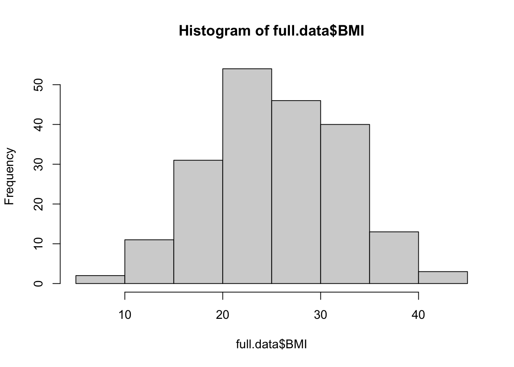
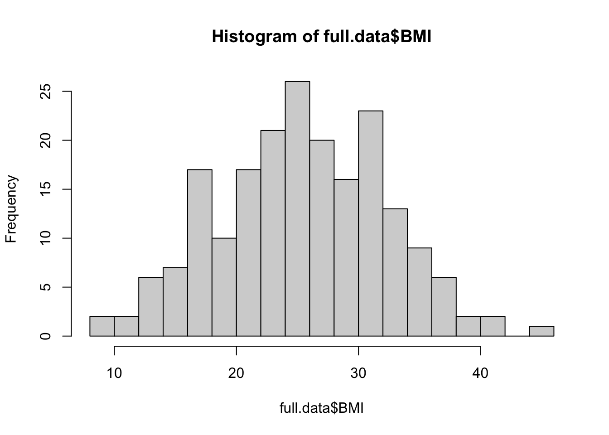
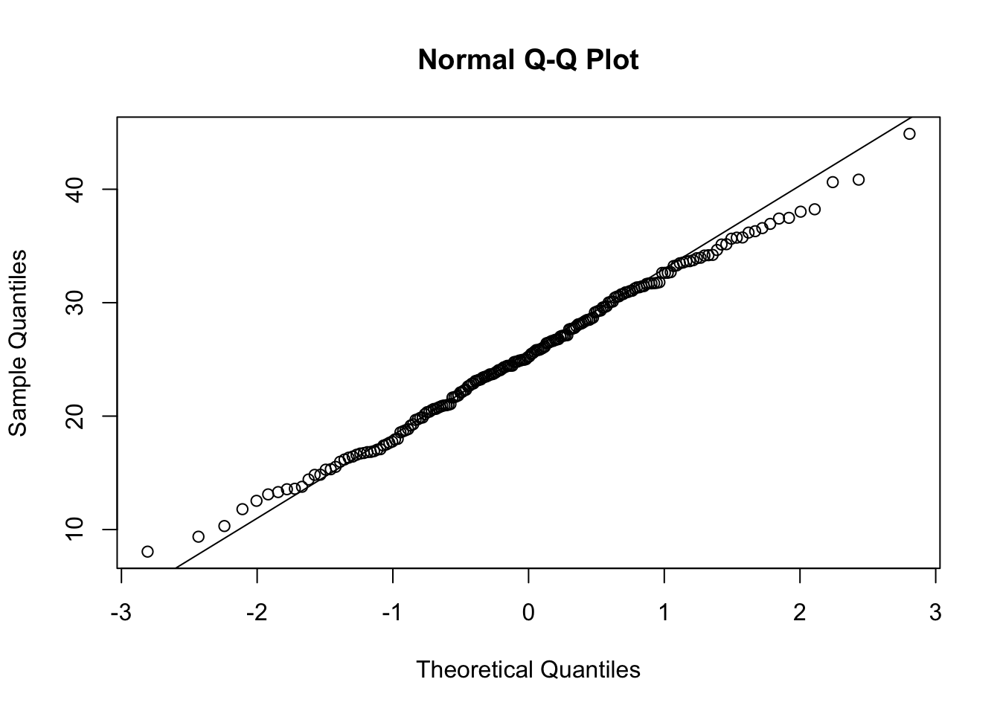
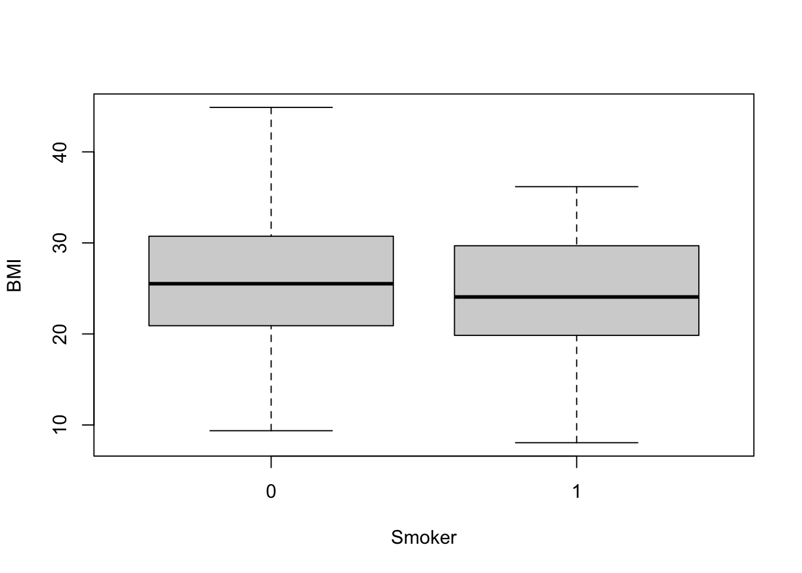
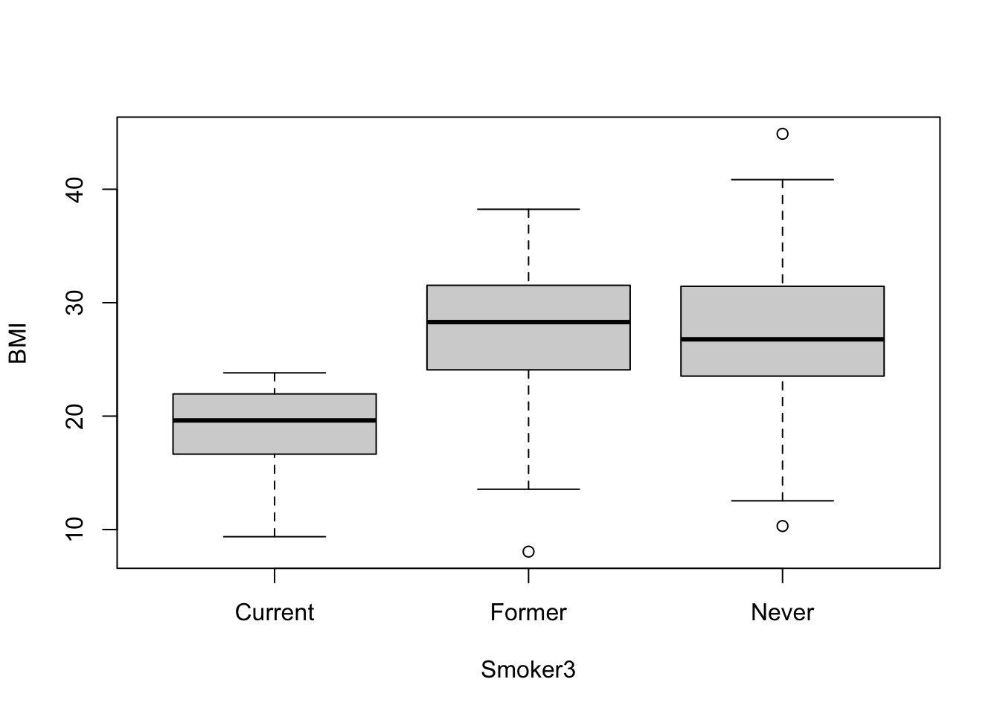

Chapter 4 Finding and Visualizing Data Trends
4.1 Basic Statistical Tests and Visualizations of Data
Need an example dataset – maybe ELGAN shuffled/deidentified, with made-up environmental exposure column?
4.1.1 Normality
Many statistical tests and methods rely on assumptions of normality. There are a few ways to look at the normality of a dataset, both formally and informally. Plotting data using historgrams, densities, or qqplots, can graphically help inform if a variable is normally distributed. There also exist statistical tests, such as the Kolmogorov-Smirnov (K-S) normality test and Shapiro-Wilk’s test, that will formally test if data come from a normal distribution. When using these tests, it is important to remember that the null hypothesis is that the sample distribution is normal, and a significant p-value means the distribution is non-normal.
Even when using more formal statistical tests to test for normality, it is important to visualize the data, as well.


#Also look at normal qqplot using qqnorm function
qqnorm(full.data$BMI);
#Add reference line
qqline(full.data$BMI);
From visual inspection, BMI seems to be pretty normally distributed. But, we can also check using a more formal statistical test, the Shapiro-Wilk’s test.
##
## Shapiro-Wilk normality test
##
## data: full.data$BMI
## W = 0.99617, p-value = 0.9014We get a p-value of .9014, so cannot reject the null hypothesis. This means that we can assume normality of this data.
4.1.2 T-tests
T-tests are used to test for a significant difference between the means of two groups. There are a few types of t-tests, but here, we will be comparing BMI between two groups, smokers and non-smokers, and will be using a two sample t-test (or independent samples t-test).
TALK ABOUT ASSUMPTIONS…
#It is nice to visualize the data across groups using things like boxplots
boxplot(data=full.data, BMI ~ Smoker);
#It is easy to peform a t-test on these data using t.test() from base stats package
t.test(data=full.data, BMI ~ Smoker);##
## Welch Two Sample t-test
##
## data: BMI by Smoker
## t = 1.6189, df = 77.478, p-value = 0.1095
## alternative hypothesis: true difference in means is not equal to 0
## 95 percent confidence interval:
## -0.4115608 3.9922067
## sample estimates:
## mean in group 0 mean in group 1
## 25.82896 24.03864#We can also save the results into a variable and access various output values
ttest.res = t.test(data=full.data, BMI ~ Smoker);
#For example, we can access the p-value
ttest.res$p.value;## [1] 0.1095319From the boxplots, it’s clear that there are differences in the BMIs between smokers and non-smokers. And, in fact, when running the t-test, we see that means across groups are not equal.
4.1.3 ANOVA
Analysis of Variance (ANOVA) is a statistical method that is used to compare means of more than two groups.
TALK ABOUT ASSUMPTIONS and other stuff.

## # A tibble: 3 x 2
## Smoker3 `mean(BMI)`
## <chr> <dbl>
## 1 Current 19.0
## 2 Former 27.4
## 3 Never 26.9## Call:
## aov(formula = BMI ~ Smoker3, data = full.data)
##
## Terms:
## Smoker3 Residuals
## Sum of Squares 2087.198 7130.377
## Deg. of Freedom 2 197
##
## Residual standard error: 6.016212
## Estimated effects may be unbalanced#We can get the typical ANOVA table using either summary or anova on fitted object
anova(aov(data=full.data, BMI ~ Smoker3));## Analysis of Variance Table
##
## Response: BMI
## Df Sum Sq Mean Sq F value Pr(>F)
## Smoker3 2 2087.2 1043.60 28.833 1.04e-11 ***
## Residuals 197 7130.4 36.19
## ---
## Signif. codes: 0 '***' 0.001 '**' 0.01 '*' 0.05 '.' 0.1 ' ' 1From the ANOVA table, we can conclude that the group means are not all equal.
4.1.4 Regression: linear regression and logistic regression
4.1.5 Chi-squared test – box plots
4.1.6 Fisher’s exact test
4.2 Heat maps
4.2.1 pheatmap
4.2.2 heatmap2
4.2.3 superheat
4.3 Clustering
Examples with genomics: Rager et al. 2014